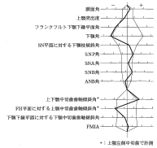
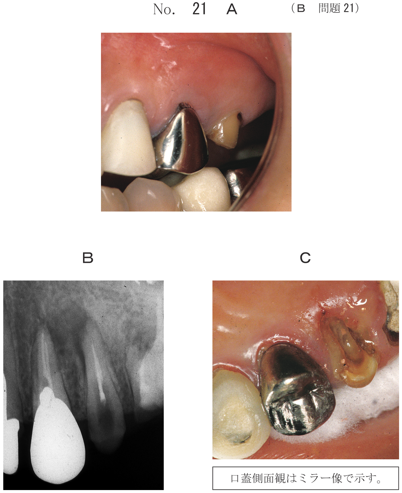
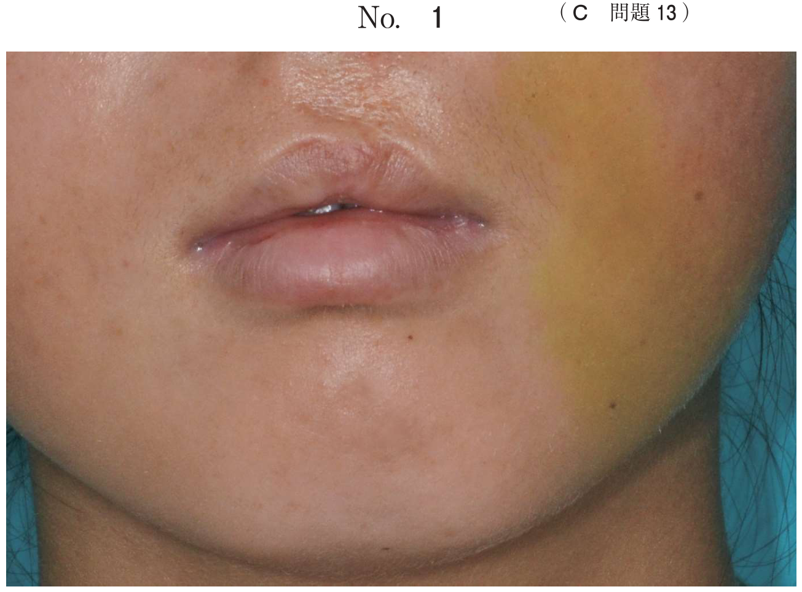
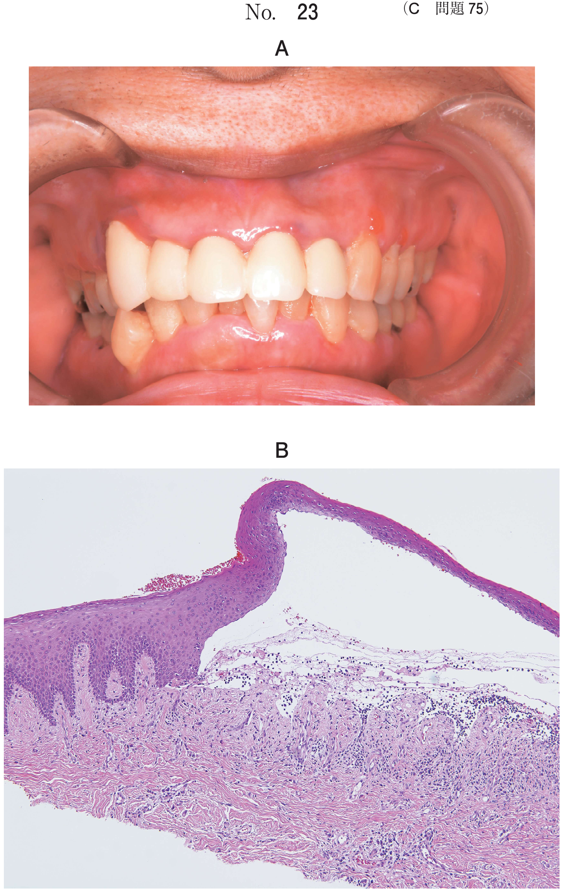

下顎前突（反対咬合）
下顎前突とは
下顎前歯が上顎前歯より前方に位置する不正咬合。反対咬合、Angle III級とも呼ばれる。
反対咬合の分類
| 分類 | 原因 | 特徴 |
|---|---|---|
| 機能性 | 早期接触→下顎前方偏位 | 二態咬合あり |
| 歯槽性 | 前歯の傾斜異常 | ANB正常範囲内 |
| 骨格性 | 上顎劣成長 or 下顎過成長 | SNA小 or SNB大 |
- 機能性：二態咬合あり（早期接触の除去で改善可能）
- 骨格性：二態咬合なし（外科的矯正が必要な場合あり）
治療装置の選択【頻出】
| 分類 | 原因 | 治療装置 |
|---|---|---|
| 機能性 | 早期接触 | 咬合斜面板、リンガルアーチ |
| 歯槽性 | 傾斜異常 | リンガルアーチ（上顎前歯の唇側傾斜） |
| 骨格性（上顎劣成長） | SNA小 | 上顎前方牽引装置 |
| 骨格性（下顎過成長） | SNB大 | チンキャップ |
治療装置の作用
| 装置 | 作用 |
|---|---|
| 上顎前方牽引装置 | 上顎の前方成長促進 |
| チンキャップ | 下顎の成長抑制 |
| 咬合斜面板 | 下顎を後方に誘導（機能性に有効） |
| リンガルアーチ | 上顎前歯の唇側傾斜 |
骨格性Ⅲ級を示す症候群
上顎劣成長により反対咬合を呈する。
| 症候群 | 特徴 |
|---|---|
| Crouzon症候群 | 頭蓋骨縫合早期癒合、眼球突出 |
| Apert症候群 | Crouzon＋多合指症 |
| 唇顎口蓋裂 | 狭窄歯列弓、側切歯欠如 |
| 鎖骨頭蓋骨異形成症 | 鎖骨欠損、過剰歯、埋伏歯 |
※Robin、Treacher Collinsは下顎劣成長 → 上顎前突
外科的矯正治療
成長期を過ぎた骨格性下顎前突では、外科的矯正治療が必要となることがある。
適応となる手術
- 下顎枝矢状分割術（SSRO）：下顎後退術
- Le Fort I型骨切り術：上顎前方移動
過去問
8歳の男児。歯並びが悪いことを主訴として来院した。初診時の咬頭嵌合位と早期接触位の口腔内写真（別冊No.44）を別に示す。セファロ分析の結果を図に示す。
まず行う処置はどれか。2つ選べ。

b 下顎切歯の舌側移動
c 暫間的咬合挙上
d 上顎骨の成長促進
e 下顎骨の成長抑制
【解説】「早期接触位」の写真がある＝機能性反対咬合。まず暫間的咬合挙上で早期接触を除去し、上顎前歯の唇側移動で被蓋を改善する。
8歳の女児。前歯で嚙みにくいことを主訴として来院した。初診時の顔面写真（別冊No.32A）と口腔内写真（別冊No.32B）とを別に示す。セファロ分析の結果を図に示す。
適切な矯正装置はどれか。2つ選べ。


b 咬合斜面板
c 舌側弧線装置
d オトガイ帽装置
e 上顎前方牽引装置
【解説】セファロでSNA小（上顎劣成長）を示す骨格性反対咬合には、上顎前方牽引装置で上顎成長促進、舌側弧線装置（リンガルアーチ）で上顎前歯の唇側傾斜を行う。
7歳の女児。前歯の噛み合わせの異常を主訴として来院した。切端咬合位はとれない。診断をした結果、矯正歯科治療を行うこととした。初診時の顔面写真（別冊No.5A）、口腔内写真（別冊No.5B）及びエックス線画像（別冊No.5C）を別に示す。セファロ分析の結果を図に示す。
適切な矯正装置はどれか。2つ選べ。


b リップバンパー
c リンガルアーチ
d 上顎前方牽引装置
e マルチブラケット装置
【解説】「切端咬合位はとれない」＝機能性ではなく骨格性反対咬合。上顎前方牽引装置で上顎成長促進、リンガルアーチで上顎前歯の唇側傾斜を行う。
7歳の女児。前歯の咬み合わせが反対になっていることを主訴として来院した。乳歯列期から気付いていたという。初診時の顔面写真（別冊No.30A）と口腔内写真（別冊No.30B）を別に示す。セファロ分析と模型分析の結果を図に示す。
適切な治療方針はどれか。3つ選べ。


b 下顎骨の成長抑制
c 下顎前歯の唇側傾斜
d 上顎歯列の側方拡大
e 上顎骨の前方成長促進
【解説】骨格性反対咬合で、上顎骨の前方成長促進（上顎前方牽引装置）、下顎骨の成長抑制（チンキャップ）、上顎歯列の側方拡大（狭窄歯列弓の改善）が適切。下顎前歯の唇側傾斜は反対咬合を悪化させる。
反対咬合を特徴とするのはどれか。2つ選べ。
b Crouzon 症候群
c Goldenhar 症候群
d Robin シークエンス
e Treacher Collins 症候群
【解説】唇顎口蓋裂とCrouzon症候群は上顎劣成長により反対咬合を呈する。Goldenharは顔面非対称、Robin・Treacher Collinsは下顎劣成長で上顎前突を呈する。
- 機能性：二態咬合あり、早期接触の記載 → 咬合斜面板
- 骨格性（SNA小）：上顎劣成長 → 上顎前方牽引装置
- 骨格性（SNB大）：下顎過成長 → チンキャップ
- 症候群：Crouzon・Apert・唇顎口蓋裂 → 反対咬合